11.9.2026 · sama yhtenäinen 1 000 osan U-talo, kolme kuvakulmaa jokaista sataa osaa kohti ja 12 palovaihetta. Kaikki 1 000 osaa: yksi yksinkertainen mesh / osa. Rakennusten pintalumi, tukikyselyt ja sortuminen pois; muu pelimaailma edelleen toiminnassa.
Tulos: vakaa 60 FPS ei toteudu tässäkään kokeessa. Tämä ei silti todista, että lumesta tai rakennustuennasta pitäisi luopua. Yhdistelmäkoe paikantaa jäljelle jäävän kuorman, ei yksittäisen ominaisuuden hintaa. Nykyistä julkaistua peliä ei korvattu näillä primitiiveillä.
ANGLE (Apple, ANGLE Metal Renderer: Apple M1 Pro, Unspecified Version) · Chrome headless · 1440 × 900 · Vite-playtest. Ajossa noin 60 Hz:n ruudunpäivitysraja: 120 FPS:n saavuttamista ei tällä ajolla voi hyväksyä eikä hylätä. Ei RTX-koneen mittaus. Sää ja valo etenivät; eri koeajot eivät olleet identtisesti pysäytettyä maailmantilaa.
Hitain yksittäinen ruutu sekä hitaimman 1%:n ruutuaikojen keskiarvosta laskettu 1% low. Alitusaika on ruutuaikapainotettu: pitkä pysähdys ei huku nopeiden ruutujen määrään. Näytämme 3% FPS-toleranssin (60 FPS:llä raja 17,182 ms), jotta 16,7 ms:n ajastinpyöristys ei näytä merkittävältä pudotukselta. Raakadatassa ovat myös täysin tiukat 60 ja 120 FPS:n rajat. 33 ms:n ruutu ei läpäise toleranssia.
| Vaihe | Hitain ms | 1% low FPS | Alle 60: aika | Jaksoja | Pisin jakso ms |
|---|---|---|---|---|---|
| 0100_courtyard | 16.8 | 59.5 | 0.0% | 0 | 0.0 |
| 0200_courtyard | 16.8 | 59.5 | 0.0% | 0 | 0.0 |
| 0300_courtyard | 33.4 | 39.8 | 1.1% | 1 | 33.4 |
| 0400_courtyard | 16.8 | 59.5 | 0.0% | 0 | 0.0 |
| 0500_courtyard | 33.4 | 30.0 | 2.2% | 2 | 33.4 |
| 0600_courtyard | 33.4 | 29.9 | 7.8% | 7 | 33.4 |
| 0700_courtyard | 33.4 | 29.9 | 29.8% | 24 | 100.0 |
| 0800_courtyard | 33.5 | 29.9 | 35.6% | 32 | 33.5 |
| 0900_courtyard | 50.1 | 24.0 | 46.1% | 40 | 66.7 |
| 1000_courtyard | 33.4 | 29.9 | 61.5% | 49 | 100.0 |
| 1000_roof | 50.0 | 24.0 | 64.3% | 44 | 116.8 |
| 1000_rear | 33.5 | 29.9 | 70.4% | 47 | 99.9 |
| fire_06 | 383.4 | 4.0 | 100.0% | 1 | 9916.2 |
| fire_11 | 200.0 | 5.0 | 100.0% | 1 | 9983.0 |
Alkuperäinen suunnitelma hyväksytettiin normaalilla auktoriteetilla. Ajastetussa kevennystestissä sijoittelun hyväksyntä ohitettiin tukilaskennan poistamiseksi. Kappaleet asetettiin tämän jälkeen normaalilla pelitransaktiolla. Tämä ei ole socket-käytettävyyden testi. Lumi maassa, eläimet, ympäristö, valot, varjot, tuli, savu, lämpö ja maan lumen sulaminen jäivät päälle. Ovien/ikkunoiden aukot ja kattojen kaltevuudet säilytettiin; primitiiviversion liikkuvat ovilehdet ja yksittäisten lautojen vaurioesitys poistettiin.
Varmennus: 0 rakennuslumivastaanotinta, 0 auktoriteetin tukiarviota, 0 worker-työtä. Jokaisessa runtime-osassa yksi mesh. 162 lattian korkeustarkistusta, 0 poikkeamaa. Selainvirheitä 0. Tämä ei korvaa hahmolla tehtävää kulkutestiä.
Palokoe: 3 seinää sytytettiin, sitten noin minuutin kuluttua 3 katepalaa. Muuten palo eteni itse. Sortumisen poisto jättää palavan materiaalin maailmaan: lopussa 196 palavaa / 1000 pystyssä / 0 raunioita. Siksi myöhäinen palo ei ole sama kuorma kuin normaaliversion sortuva talo. Koko 1000 osan palaminen ei ollut kokeen päättymisehto.
Testiadapterin rajoitus: loppuun palaneet osat jäävät paikalleen ja aiheuttavat toistuvia sortumakutsuja sekä ilmoituksia. Sortumakäsittelijä ohitettiin 2812 kertaa. Myöhäisen palon mittauksissa on mukana tämä ylimääräinen työ; sen erillistä hintaa ei mitattu. Ehjän talon mittaukseen palovaiheen rajoitus ei liity.
Kuvakaappaus seuraa mittausjaksoa; elävä palo ja kuvan HUD voivat siksi ehtiä hieman edelle jakson tilastosta. Lyhyet 3–16 sekunnin otokset eivät ole pitkäkestoisen vakauden sertifiointi. Testin rakennus- ja kuvankaappausvaiheet erotetaan yllä olevista kiertomittauksista.
Hitain ruutu 50.0 ms (20.0 hetkellinen FPS) · 1% low 25.7 FPS
Alle 60 FPS (3% toleranssi): 5.0% ajasta · 6 jaksoa · pisin 66.6 ms. Ruutuaika p95 16.8 ms / p99 33.4 ms. 292 ruutua / 5.00 s.
CPU 13.3 ms, GPU 10.5 ms (diagnostiset keskiarvot, eivät sujuvuuden hyväksyntä). Kamera: korkeus 24 m / etäisyys 38 m.
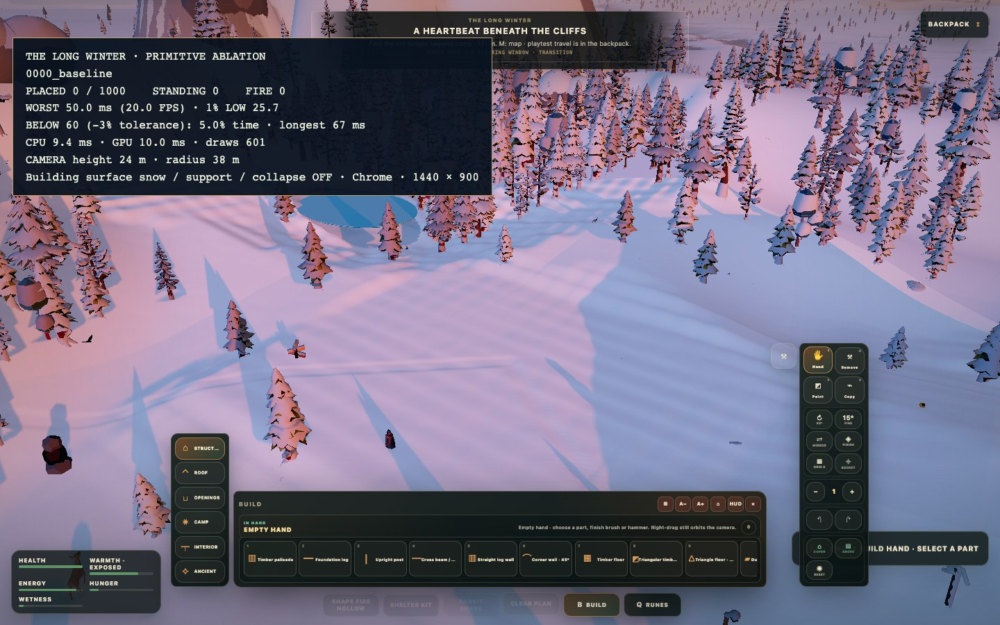
Hitain ruutu 16.8 ms (59.5 hetkellinen FPS) · 1% low 59.5 FPS
Alle 60 FPS (3% toleranssi): 0.0% ajasta · 0 jaksoa · pisin 0.0 ms. Ruutuaika p95 16.7 ms / p99 16.8 ms. 180 ruutua / 3.00 s.
CPU 11.2 ms, GPU 9.6 ms (diagnostiset keskiarvot, eivät sujuvuuden hyväksyntä). Kamera: korkeus 16 m / etäisyys 36 m.
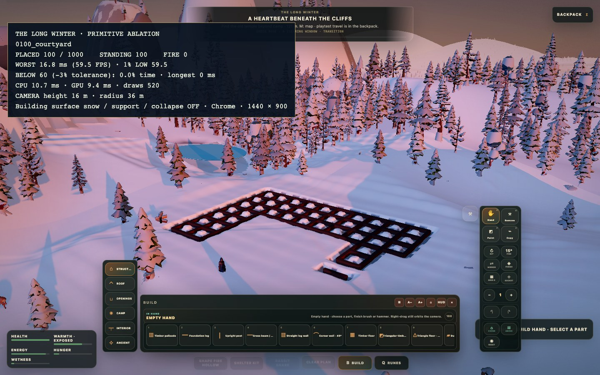
Hitain ruutu 16.8 ms (59.5 hetkellinen FPS) · 1% low 59.5 FPS
Alle 60 FPS (3% toleranssi): 0.0% ajasta · 0 jaksoa · pisin 0.0 ms. Ruutuaika p95 16.7 ms / p99 16.8 ms. 180 ruutua / 3.00 s.
CPU 11.1 ms, GPU 9.9 ms (diagnostiset keskiarvot, eivät sujuvuuden hyväksyntä). Kamera: korkeus 35 m / etäisyys 30 m.
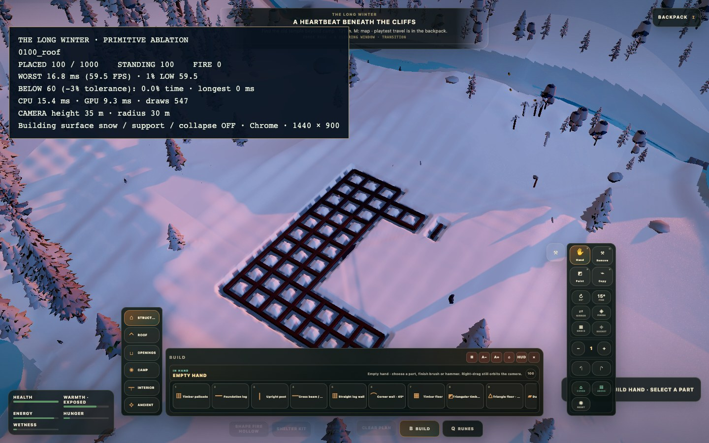
Hitain ruutu 16.8 ms (59.5 hetkellinen FPS) · 1% low 59.5 FPS
Alle 60 FPS (3% toleranssi): 0.0% ajasta · 0 jaksoa · pisin 0.0 ms. Ruutuaika p95 16.8 ms / p99 16.8 ms. 180 ruutua / 3.00 s.
CPU 12.0 ms, GPU 8.5 ms (diagnostiset keskiarvot, eivät sujuvuuden hyväksyntä). Kamera: korkeus 12 m / etäisyys 46 m.
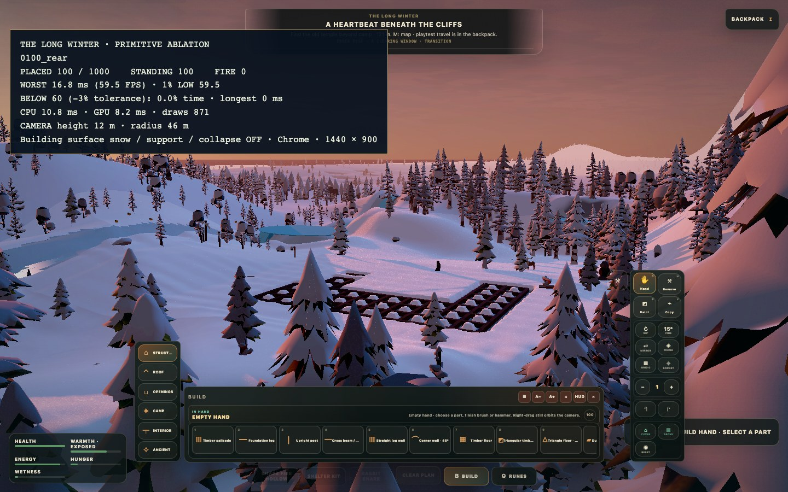
Hitain ruutu 16.8 ms (59.5 hetkellinen FPS) · 1% low 59.5 FPS
Alle 60 FPS (3% toleranssi): 0.0% ajasta · 0 jaksoa · pisin 0.0 ms. Ruutuaika p95 16.7 ms / p99 16.8 ms. 180 ruutua / 3.00 s.
CPU 12.0 ms, GPU 9.6 ms (diagnostiset keskiarvot, eivät sujuvuuden hyväksyntä). Kamera: korkeus 16 m / etäisyys 36 m.
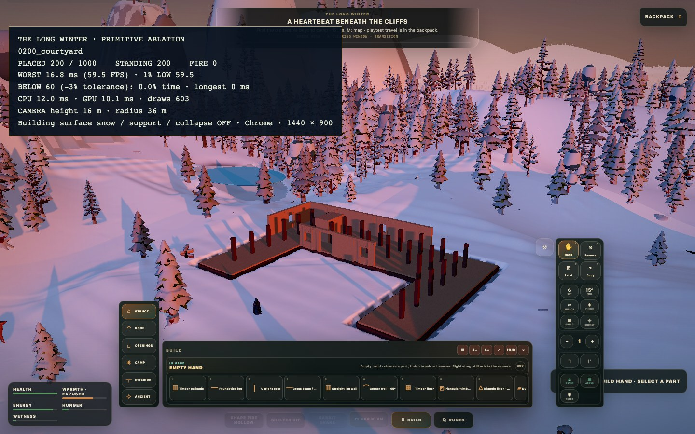
Hitain ruutu 33.4 ms (29.9 hetkellinen FPS) · 1% low 39.8 FPS
Alle 60 FPS (3% toleranssi): 1.1% ajasta · 1 jaksoa · pisin 33.4 ms. Ruutuaika p95 16.8 ms / p99 16.8 ms. 180 ruutua / 3.02 s.
CPU 11.9 ms, GPU 9.7 ms (diagnostiset keskiarvot, eivät sujuvuuden hyväksyntä). Kamera: korkeus 35 m / etäisyys 30 m.
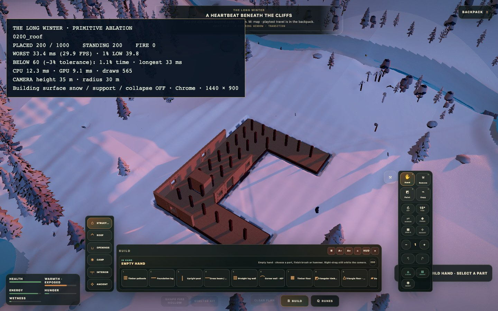
Hitain ruutu 16.8 ms (59.5 hetkellinen FPS) · 1% low 59.5 FPS
Alle 60 FPS (3% toleranssi): 0.0% ajasta · 0 jaksoa · pisin 0.0 ms. Ruutuaika p95 16.8 ms / p99 16.8 ms. 180 ruutua / 3.00 s.
CPU 12.7 ms, GPU 8.8 ms (diagnostiset keskiarvot, eivät sujuvuuden hyväksyntä). Kamera: korkeus 12 m / etäisyys 46 m.
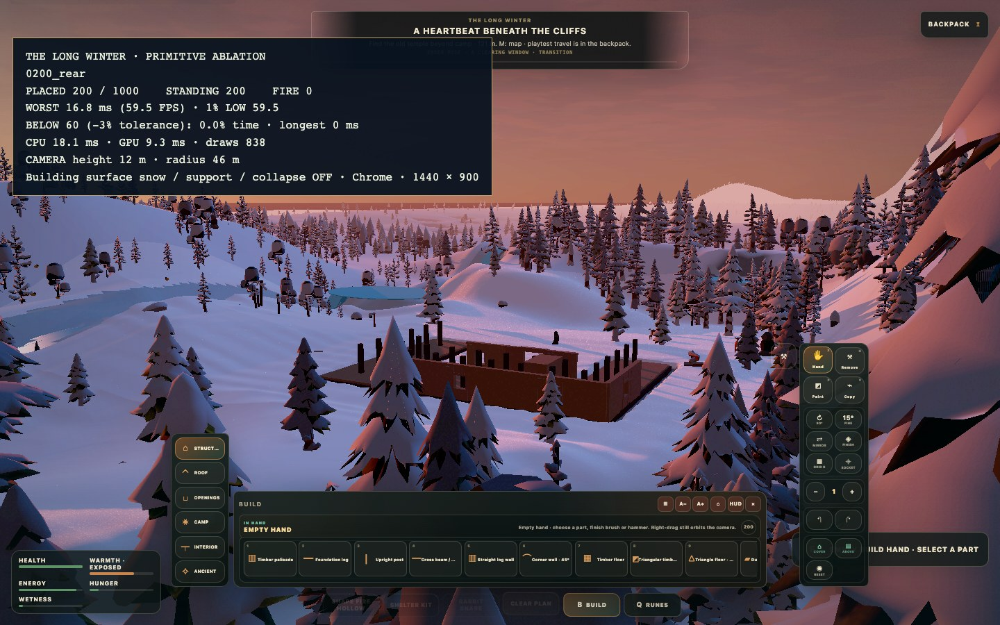
Hitain ruutu 33.4 ms (29.9 hetkellinen FPS) · 1% low 39.8 FPS
Alle 60 FPS (3% toleranssi): 1.1% ajasta · 1 jaksoa · pisin 33.4 ms. Ruutuaika p95 16.8 ms / p99 16.8 ms. 181 ruutua / 3.03 s.
CPU 12.8 ms, GPU 9.7 ms (diagnostiset keskiarvot, eivät sujuvuuden hyväksyntä). Kamera: korkeus 16 m / etäisyys 36 m.
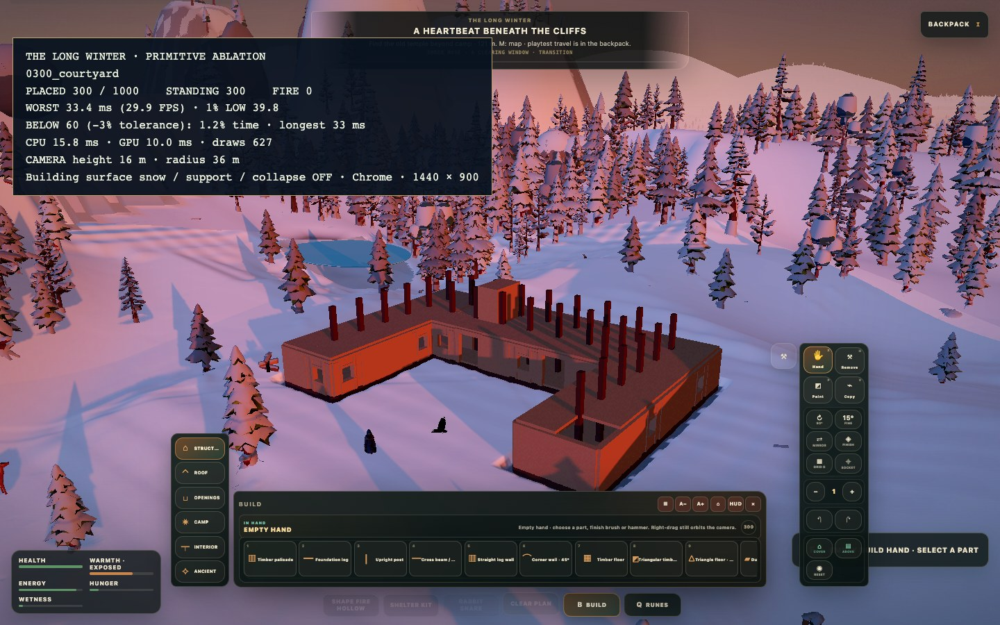
Hitain ruutu 16.8 ms (59.5 hetkellinen FPS) · 1% low 59.5 FPS
Alle 60 FPS (3% toleranssi): 0.0% ajasta · 0 jaksoa · pisin 0.0 ms. Ruutuaika p95 16.7 ms / p99 16.8 ms. 180 ruutua / 3.00 s.
CPU 13.0 ms, GPU 9.8 ms (diagnostiset keskiarvot, eivät sujuvuuden hyväksyntä). Kamera: korkeus 35 m / etäisyys 30 m.
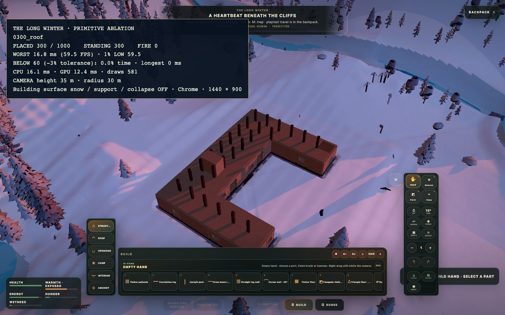
Hitain ruutu 16.8 ms (59.5 hetkellinen FPS) · 1% low 59.5 FPS
Alle 60 FPS (3% toleranssi): 0.0% ajasta · 0 jaksoa · pisin 0.0 ms. Ruutuaika p95 16.7 ms / p99 16.8 ms. 181 ruutua / 3.02 s.
CPU 13.9 ms, GPU 8.4 ms (diagnostiset keskiarvot, eivät sujuvuuden hyväksyntä). Kamera: korkeus 12 m / etäisyys 46 m.
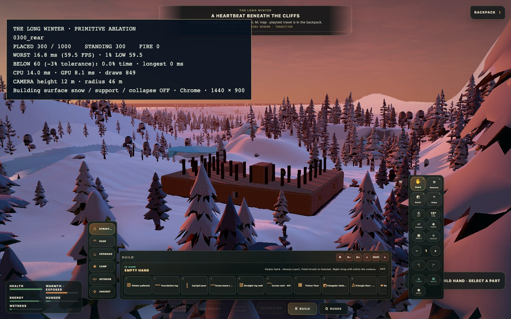
Hitain ruutu 16.8 ms (59.5 hetkellinen FPS) · 1% low 59.5 FPS
Alle 60 FPS (3% toleranssi): 0.0% ajasta · 0 jaksoa · pisin 0.0 ms. Ruutuaika p95 16.7 ms / p99 16.8 ms. 180 ruutua / 3.00 s.
CPU 13.8 ms, GPU 9.7 ms (diagnostiset keskiarvot, eivät sujuvuuden hyväksyntä). Kamera: korkeus 16 m / etäisyys 36 m.
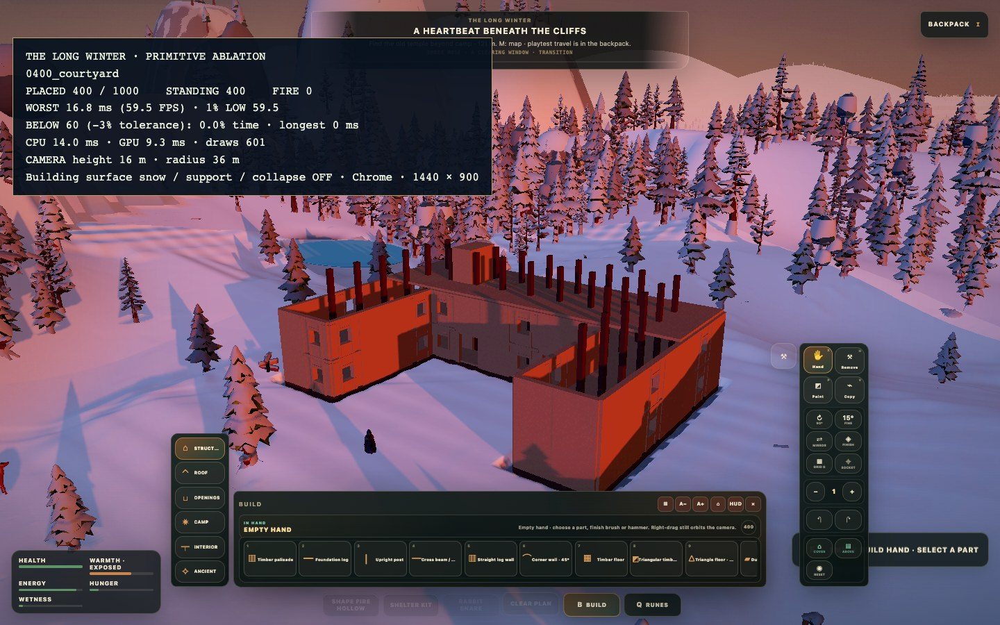
Hitain ruutu 16.8 ms (59.5 hetkellinen FPS) · 1% low 59.5 FPS
Alle 60 FPS (3% toleranssi): 0.0% ajasta · 0 jaksoa · pisin 0.0 ms. Ruutuaika p95 16.8 ms / p99 16.8 ms. 181 ruutua / 3.02 s.
CPU 13.8 ms, GPU 10.0 ms (diagnostiset keskiarvot, eivät sujuvuuden hyväksyntä). Kamera: korkeus 35 m / etäisyys 30 m.
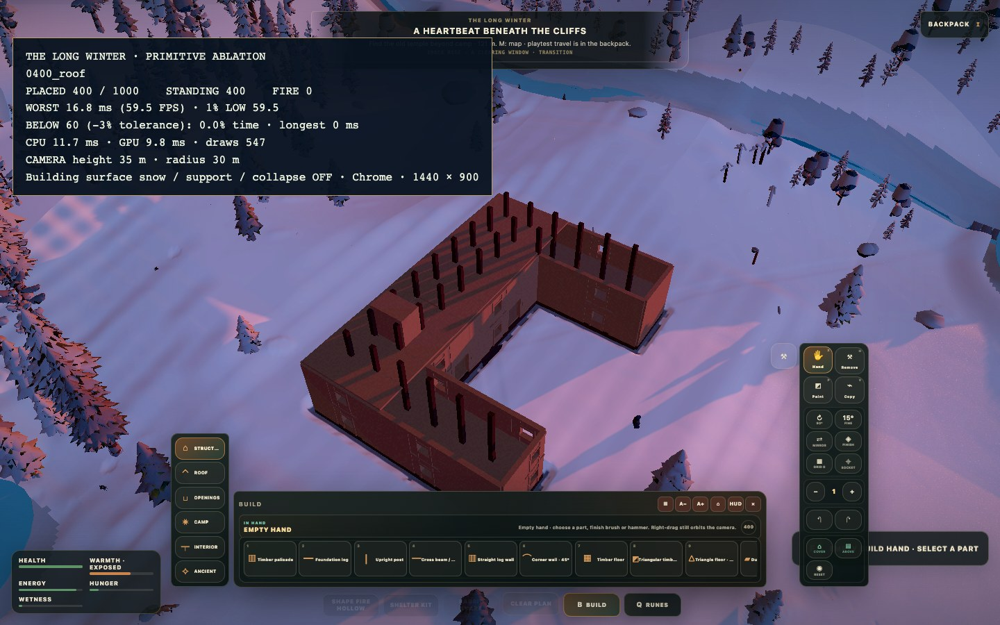
Hitain ruutu 33.3 ms (30.0 hetkellinen FPS) · 1% low 30.0 FPS
Alle 60 FPS (3% toleranssi): 2.2% ajasta · 2 jaksoa · pisin 33.3 ms. Ruutuaika p95 16.7 ms / p99 33.3 ms. 178 ruutua / 3.00 s.
CPU 15.2 ms, GPU 8.7 ms (diagnostiset keskiarvot, eivät sujuvuuden hyväksyntä). Kamera: korkeus 12 m / etäisyys 46 m.
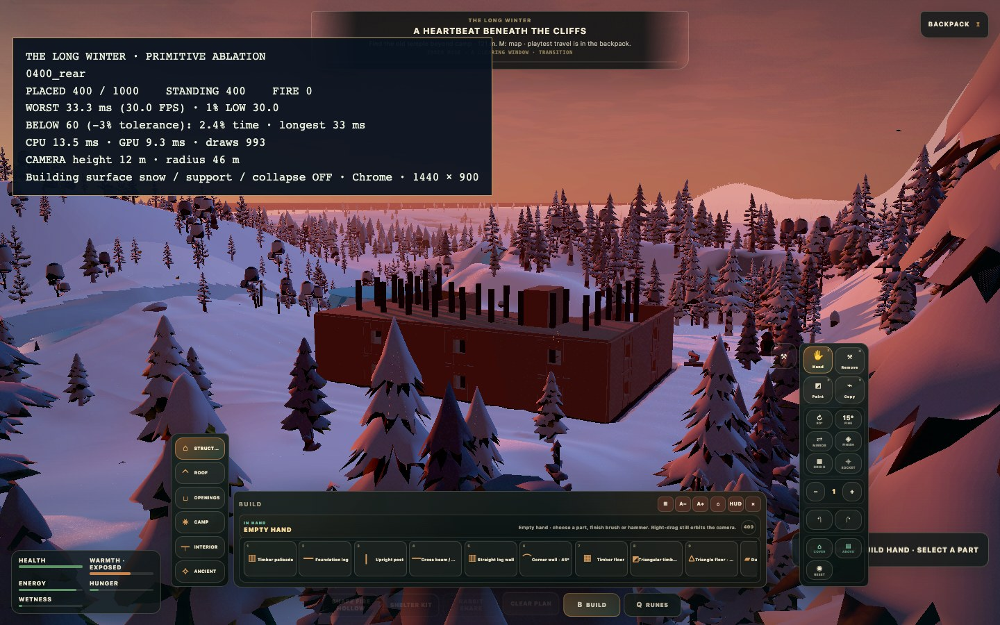
Hitain ruutu 33.4 ms (29.9 hetkellinen FPS) · 1% low 30.0 FPS
Alle 60 FPS (3% toleranssi): 2.2% ajasta · 2 jaksoa · pisin 33.4 ms. Ruutuaika p95 16.8 ms / p99 33.2 ms. 179 ruutua / 3.02 s.
CPU 15.0 ms, GPU 10.1 ms (diagnostiset keskiarvot, eivät sujuvuuden hyväksyntä). Kamera: korkeus 16 m / etäisyys 36 m.
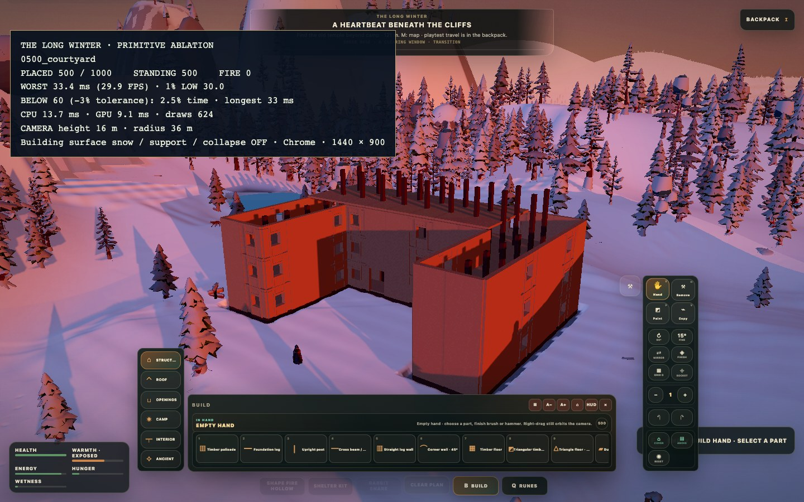
Hitain ruutu 33.3 ms (30.0 hetkellinen FPS) · 1% low 39.9 FPS
Alle 60 FPS (3% toleranssi): 1.1% ajasta · 1 jaksoa · pisin 33.3 ms. Ruutuaika p95 16.8 ms / p99 16.8 ms. 179 ruutua / 3.00 s.
CPU 14.8 ms, GPU 9.4 ms (diagnostiset keskiarvot, eivät sujuvuuden hyväksyntä). Kamera: korkeus 35 m / etäisyys 30 m.
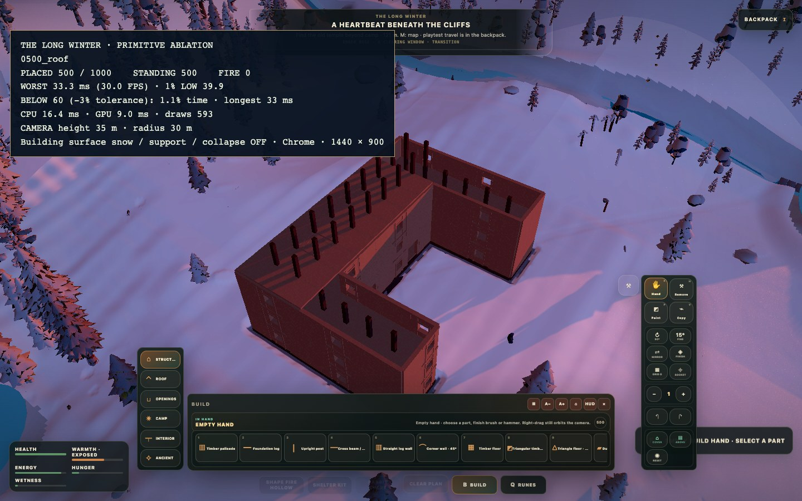
Hitain ruutu 33.5 ms (29.9 hetkellinen FPS) · 1% low 29.9 FPS
Alle 60 FPS (3% toleranssi): 19.0% ajasta · 17 jaksoa · pisin 33.5 ms. Ruutuaika p95 33.3 ms / p99 33.4 ms. 162 ruutua / 2.98 s.
CPU 17.0 ms, GPU 9.0 ms (diagnostiset keskiarvot, eivät sujuvuuden hyväksyntä). Kamera: korkeus 12 m / etäisyys 46 m.
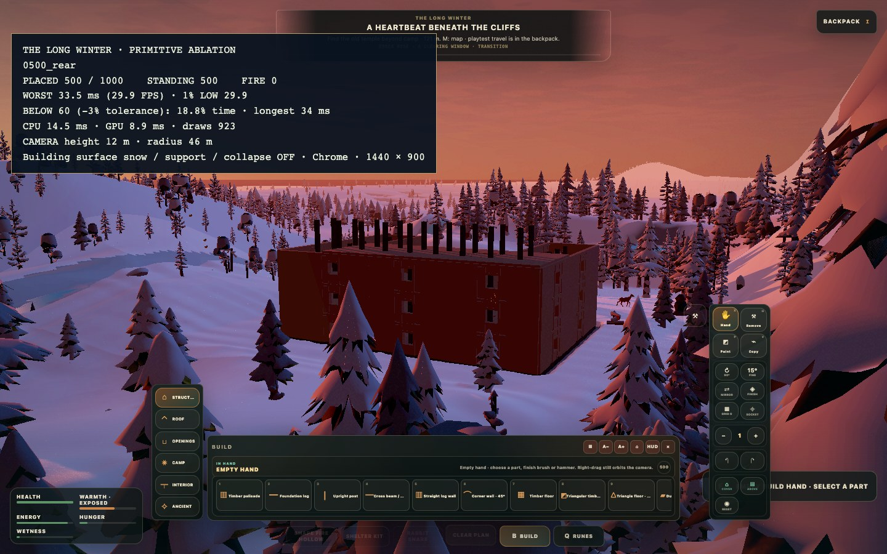
Hitain ruutu 33.4 ms (29.9 hetkellinen FPS) · 1% low 29.9 FPS
Alle 60 FPS (3% toleranssi): 7.8% ajasta · 7 jaksoa · pisin 33.4 ms. Ruutuaika p95 16.8 ms / p99 33.4 ms. 173 ruutua / 3.00 s.
CPU 15.9 ms, GPU 9.6 ms (diagnostiset keskiarvot, eivät sujuvuuden hyväksyntä). Kamera: korkeus 16 m / etäisyys 36 m.
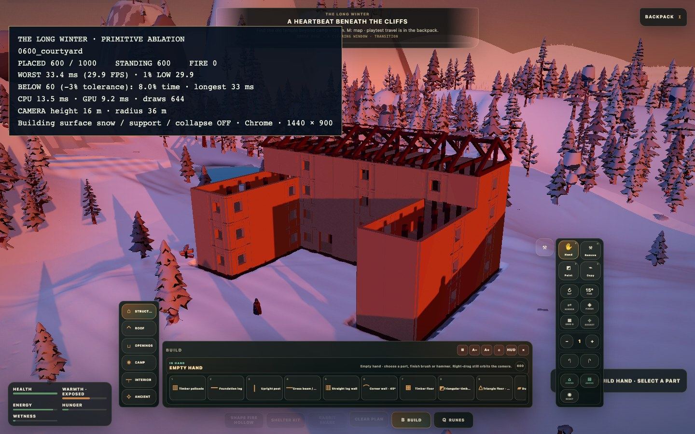
Hitain ruutu 33.4 ms (29.9 hetkellinen FPS) · 1% low 29.9 FPS
Alle 60 FPS (3% toleranssi): 5.6% ajasta · 5 jaksoa · pisin 33.4 ms. Ruutuaika p95 16.8 ms / p99 33.4 ms. 175 ruutua / 3.00 s.
CPU 15.7 ms, GPU 9.5 ms (diagnostiset keskiarvot, eivät sujuvuuden hyväksyntä). Kamera: korkeus 35 m / etäisyys 30 m.
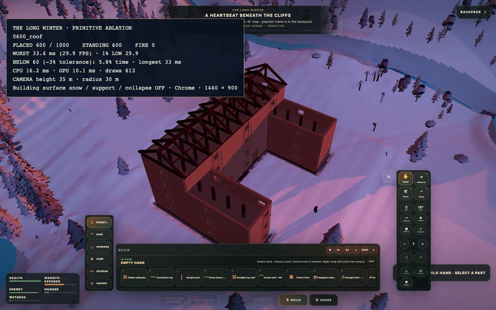
Hitain ruutu 33.4 ms (29.9 hetkellinen FPS) · 1% low 29.9 FPS
Alle 60 FPS (3% toleranssi): 19.0% ajasta · 17 jaksoa · pisin 33.4 ms. Ruutuaika p95 33.3 ms / p99 33.4 ms. 162 ruutua / 2.98 s.
CPU 16.9 ms, GPU 8.8 ms (diagnostiset keskiarvot, eivät sujuvuuden hyväksyntä). Kamera: korkeus 12 m / etäisyys 46 m.
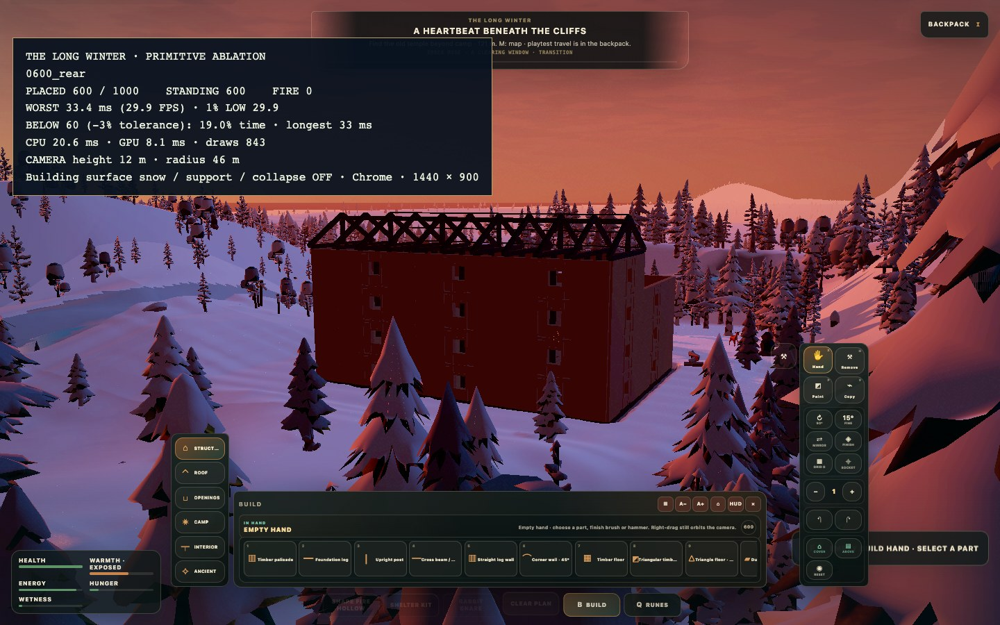
Hitain ruutu 33.4 ms (29.9 hetkellinen FPS) · 1% low 29.9 FPS
Alle 60 FPS (3% toleranssi): 29.8% ajasta · 24 jaksoa · pisin 100.0 ms. Ruutuaika p95 33.4 ms / p99 33.4 ms. 154 ruutua / 3.02 s.
CPU 17.2 ms, GPU 9.7 ms (diagnostiset keskiarvot, eivät sujuvuuden hyväksyntä). Kamera: korkeus 16 m / etäisyys 36 m.
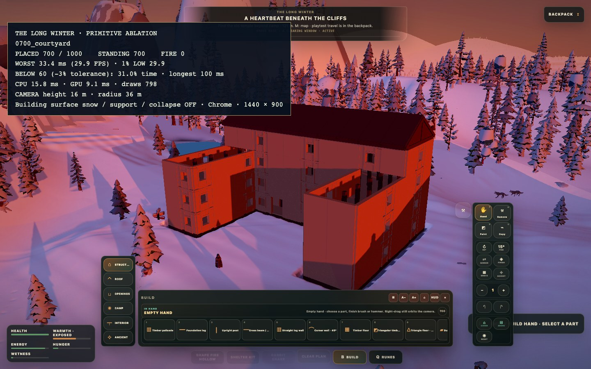
Hitain ruutu 33.4 ms (29.9 hetkellinen FPS) · 1% low 29.9 FPS
Alle 60 FPS (3% toleranssi): 23.3% ajasta · 21 jaksoa · pisin 33.4 ms. Ruutuaika p95 33.4 ms / p99 33.4 ms. 159 ruutua / 3.00 s.
CPU 17.4 ms, GPU 9.4 ms (diagnostiset keskiarvot, eivät sujuvuuden hyväksyntä). Kamera: korkeus 35 m / etäisyys 30 m.
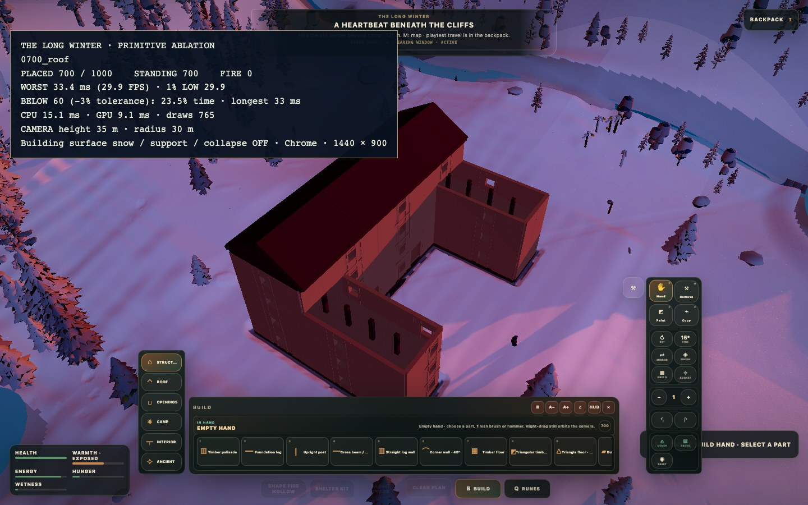
Hitain ruutu 33.4 ms (29.9 hetkellinen FPS) · 1% low 29.9 FPS
Alle 60 FPS (3% toleranssi): 38.0% ajasta · 34 jaksoa · pisin 33.4 ms. Ruutuaika p95 33.4 ms / p99 33.4 ms. 145 ruutua / 2.98 s.
CPU 19.2 ms, GPU 9.4 ms (diagnostiset keskiarvot, eivät sujuvuuden hyväksyntä). Kamera: korkeus 12 m / etäisyys 46 m.
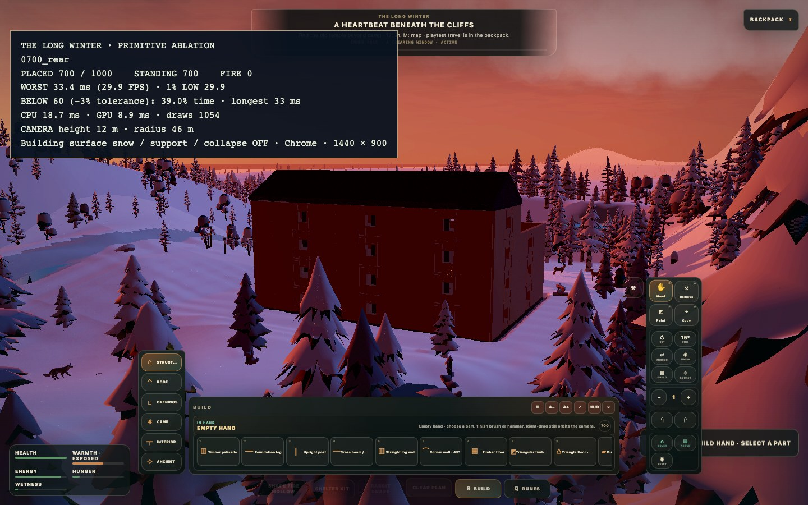
Hitain ruutu 33.5 ms (29.9 hetkellinen FPS) · 1% low 29.9 FPS
Alle 60 FPS (3% toleranssi): 35.6% ajasta · 32 jaksoa · pisin 33.5 ms. Ruutuaika p95 33.4 ms / p99 33.4 ms. 148 ruutua / 3.00 s.
CPU 18.9 ms, GPU 9.6 ms (diagnostiset keskiarvot, eivät sujuvuuden hyväksyntä). Kamera: korkeus 16 m / etäisyys 36 m.
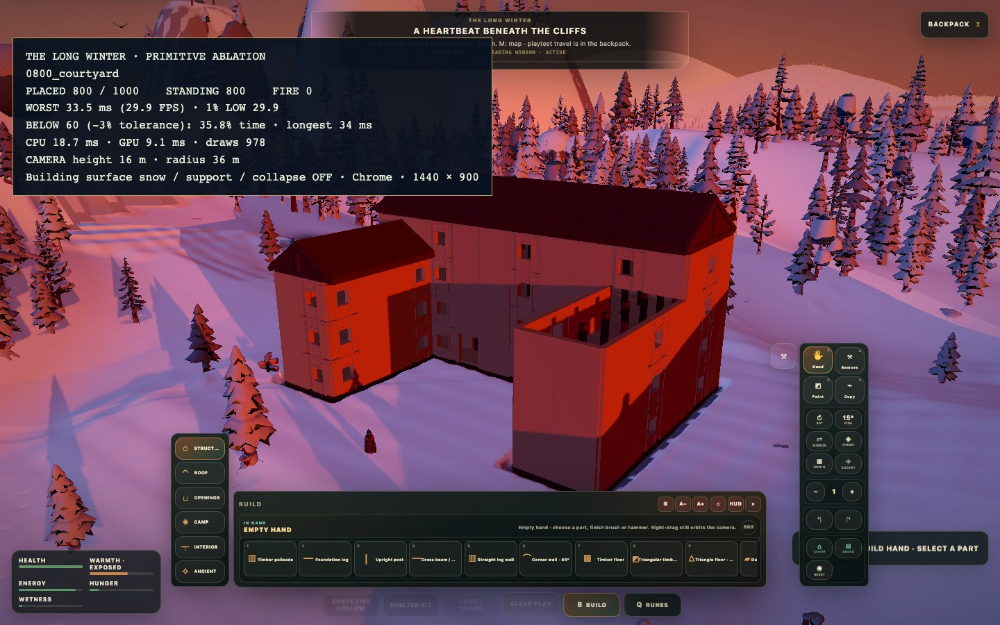
Hitain ruutu 66.7 ms (15.0 hetkellinen FPS) · 1% low 20.0 FPS
Alle 60 FPS (3% toleranssi): 36.8% ajasta · 31 jaksoa · pisin 100.0 ms. Ruutuaika p95 33.3 ms / p99 33.4 ms. 145 ruutua / 2.98 s.
CPU 18.9 ms, GPU 9.5 ms (diagnostiset keskiarvot, eivät sujuvuuden hyväksyntä). Kamera: korkeus 35 m / etäisyys 30 m.
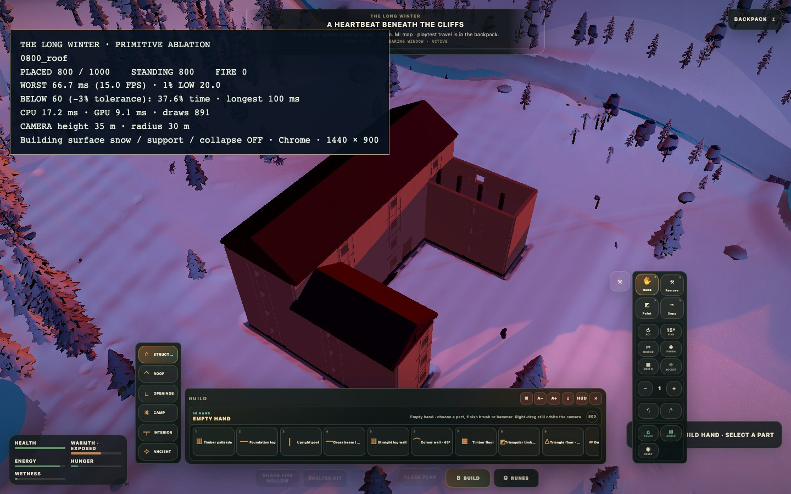
Hitain ruutu 33.4 ms (29.9 hetkellinen FPS) · 1% low 29.9 FPS
Alle 60 FPS (3% toleranssi): 44.7% ajasta · 40 jaksoa · pisin 33.4 ms. Ruutuaika p95 33.4 ms / p99 33.4 ms. 139 ruutua / 2.98 s.
CPU 20.2 ms, GPU 9.5 ms (diagnostiset keskiarvot, eivät sujuvuuden hyväksyntä). Kamera: korkeus 12 m / etäisyys 46 m.
Hitain ruutu 50.1 ms (20.0 hetkellinen FPS) · 1% low 24.0 FPS
Alle 60 FPS (3% toleranssi): 46.1% ajasta · 40 jaksoa · pisin 66.7 ms. Ruutuaika p95 33.4 ms / p99 33.4 ms. 138 ruutua / 3.00 s.
CPU 20.1 ms, GPU 10.8 ms (diagnostiset keskiarvot, eivät sujuvuuden hyväksyntä). Kamera: korkeus 16 m / etäisyys 36 m.
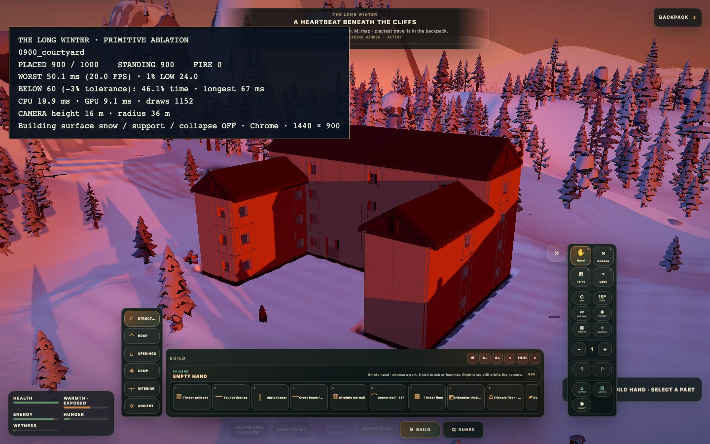
Hitain ruutu 33.4 ms (29.9 hetkellinen FPS) · 1% low 29.9 FPS
Alle 60 FPS (3% toleranssi): 53.6% ajasta · 46 jaksoa · pisin 66.6 ms. Ruutuaika p95 33.4 ms / p99 33.4 ms. 131 ruutua / 2.98 s.
CPU 21.5 ms, GPU 9.8 ms (diagnostiset keskiarvot, eivät sujuvuuden hyväksyntä). Kamera: korkeus 35 m / etäisyys 30 m.
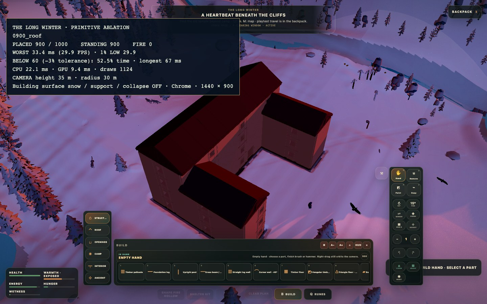
Hitain ruutu 33.4 ms (29.9 hetkellinen FPS) · 1% low 29.9 FPS
Alle 60 FPS (3% toleranssi): 56.7% ajasta · 49 jaksoa · pisin 66.6 ms. Ruutuaika p95 33.4 ms / p99 33.4 ms. 129 ruutua / 3.00 s.
CPU 21.7 ms, GPU 9.4 ms (diagnostiset keskiarvot, eivät sujuvuuden hyväksyntä). Kamera: korkeus 12 m / etäisyys 46 m.
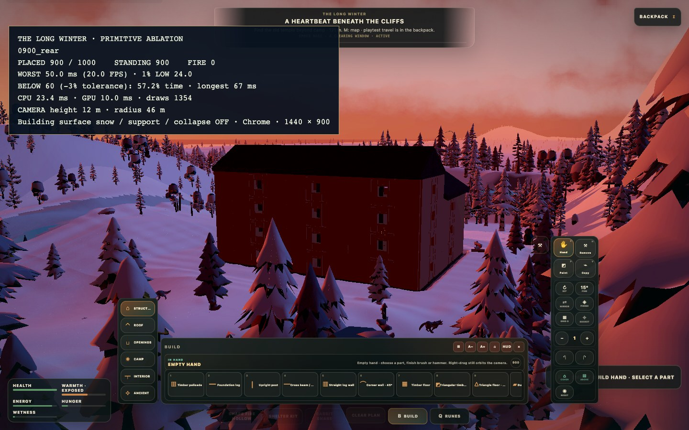
Hitain ruutu 33.4 ms (29.9 hetkellinen FPS) · 1% low 29.9 FPS
Alle 60 FPS (3% toleranssi): 61.5% ajasta · 49 jaksoa · pisin 100.0 ms. Ruutuaika p95 33.4 ms / p99 33.4 ms. 124 ruutua / 2.98 s.
CPU 22.5 ms, GPU 10.2 ms (diagnostiset keskiarvot, eivät sujuvuuden hyväksyntä). Kamera: korkeus 16 m / etäisyys 36 m.
Hitain ruutu 50.0 ms (20.0 hetkellinen FPS) · 1% low 24.0 FPS
Alle 60 FPS (3% toleranssi): 64.3% ajasta · 44 jaksoa · pisin 116.8 ms. Ruutuaika p95 33.4 ms / p99 33.4 ms. 121 ruutua / 2.98 s.
CPU 23.0 ms, GPU 10.4 ms (diagnostiset keskiarvot, eivät sujuvuuden hyväksyntä). Kamera: korkeus 35 m / etäisyys 30 m.
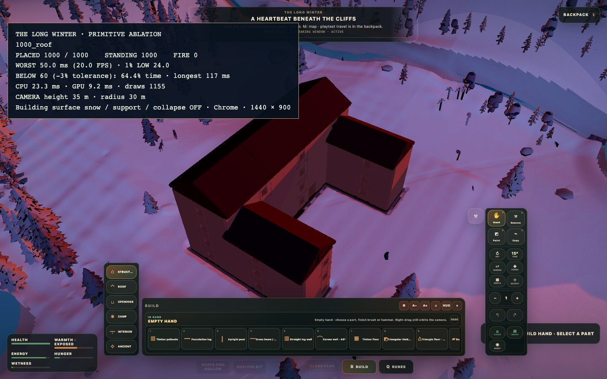
Hitain ruutu 33.5 ms (29.9 hetkellinen FPS) · 1% low 29.9 FPS
Alle 60 FPS (3% toleranssi): 70.4% ajasta · 47 jaksoa · pisin 99.9 ms. Ruutuaika p95 33.4 ms / p99 33.4 ms. 116 ruutua / 2.98 s.
CPU 24.2 ms, GPU 10.9 ms (diagnostiset keskiarvot, eivät sujuvuuden hyväksyntä). Kamera: korkeus 12 m / etäisyys 46 m.
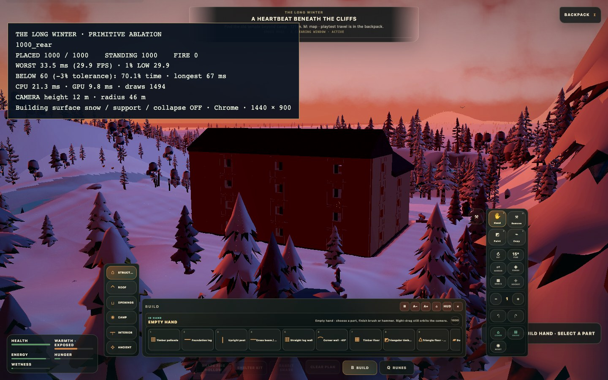
Hitain ruutu 33.4 ms (29.9 hetkellinen FPS) · 1% low 29.9 FPS
Alle 60 FPS (3% toleranssi): 60.9% ajasta · 80 jaksoa · pisin 66.7 ms. Ruutuaika p95 33.4 ms / p99 33.4 ms. 208 ruutua / 4.98 s.
CPU 22.5 ms, GPU 9.4 ms (diagnostiset keskiarvot, eivät sujuvuuden hyväksyntä). Kamera: korkeus 8 m / etäisyys 19 m.
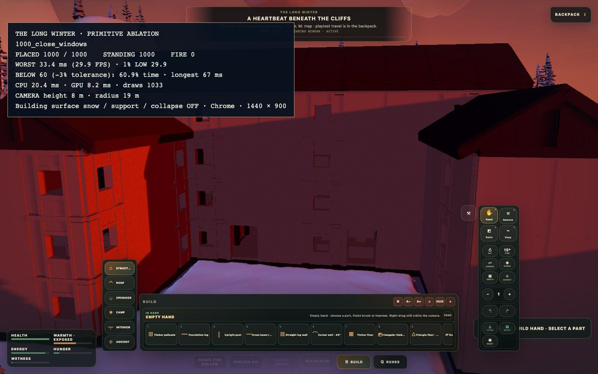
Hitain ruutu 50.1 ms (20.0 hetkellinen FPS) · 1% low 23.3 FPS
Alle 60 FPS (3% toleranssi): 66.4% ajasta · 236 jaksoa · pisin 166.7 ms. Ruutuaika p95 33.4 ms / p99 33.4 ms. 638 ruutua / 15.97 s.
CPU 23.5 ms, GPU — ms (diagnostiset keskiarvot, eivät sujuvuuden hyväksyntä). Kamera: korkeus 16 m / etäisyys 36 m. Tarkka trace käynnissä; luotettava GPU-erittely erillisessä tracessa.
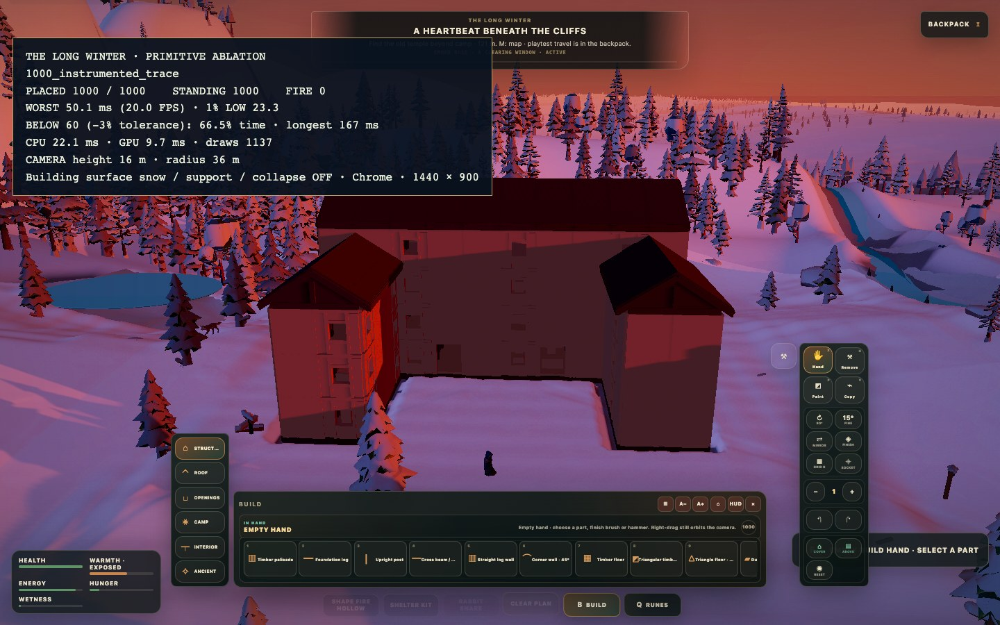
Hitain ruutu 50.1 ms (20.0 hetkellinen FPS) · 1% low 20.0 FPS
Alle 60 FPS (3% toleranssi): 87.5% ajasta · 75 jaksoa · pisin 1216.7 ms. Ruutuaika p95 33.5 ms / p99 50.0 ms. 329 ruutua / 9.98 s.
CPU 28.8 ms, GPU 12.1 ms (diagnostiset keskiarvot, eivät sujuvuuden hyväksyntä). Kamera: korkeus 8 m / etäisyys 26 m.
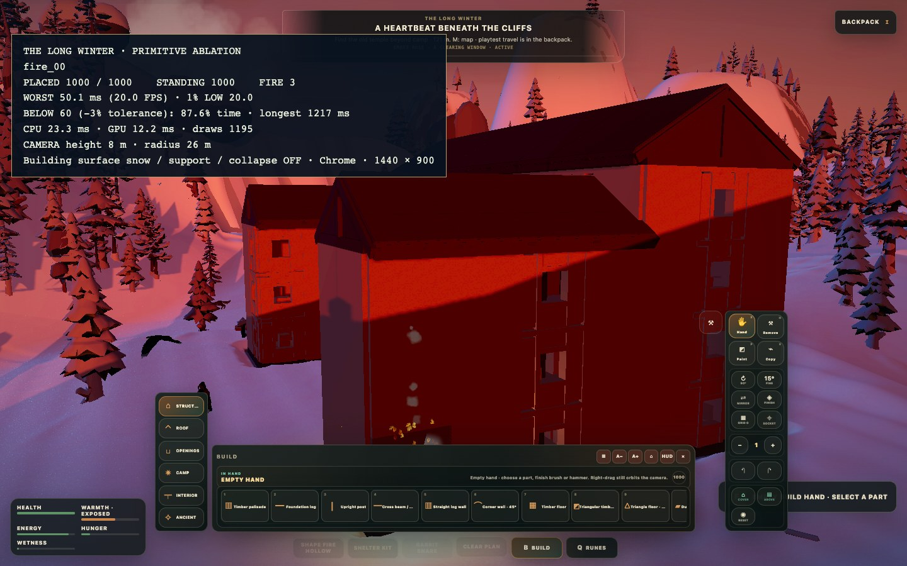
Hitain ruutu 50.1 ms (20.0 hetkellinen FPS) · 1% low 20.0 FPS
Alle 60 FPS (3% toleranssi): 91.8% ajasta · 49 jaksoa · pisin 1283.3 ms. Ruutuaika p95 50.0 ms / p99 50.1 ms. 313 ruutua / 9.98 s.
CPU 30.3 ms, GPU 13.1 ms (diagnostiset keskiarvot, eivät sujuvuuden hyväksyntä). Kamera: korkeus 16 m / etäisyys 35 m.
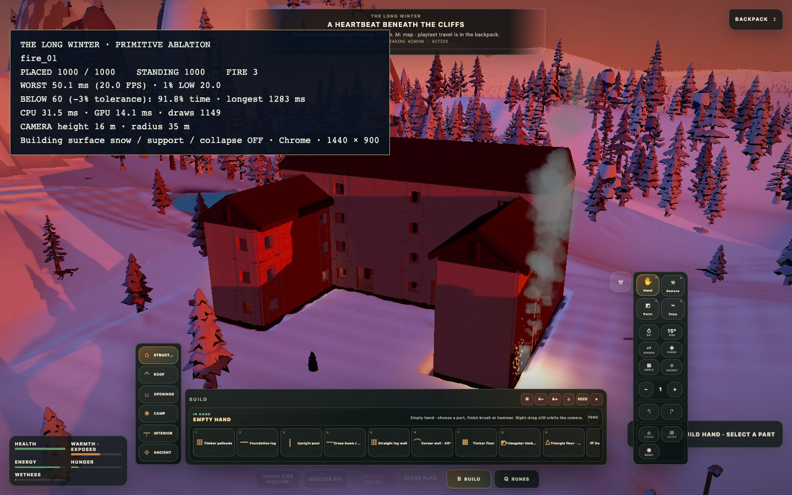
Hitain ruutu 50.1 ms (20.0 hetkellinen FPS) · 1% low 20.0 FPS
Alle 60 FPS (3% toleranssi): 88.5% ajasta · 70 jaksoa · pisin 466.7 ms. Ruutuaika p95 33.4 ms / p99 50.0 ms. 327 ruutua / 10.00 s.
CPU 29.0 ms, GPU 13.6 ms (diagnostiset keskiarvot, eivät sujuvuuden hyväksyntä). Kamera: korkeus 24 m / etäisyys 44 m.
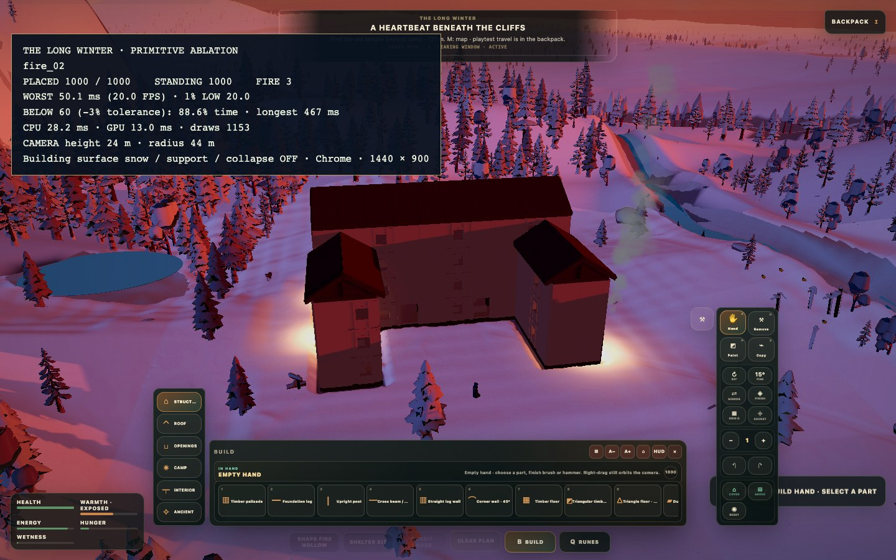
Hitain ruutu 150.0 ms (6.7 hetkellinen FPS) · 1% low 13.3 FPS
Alle 60 FPS (3% toleranssi): 87.2% ajasta · 76 jaksoa · pisin 400.0 ms. Ruutuaika p95 33.4 ms / p99 50.0 ms. 328 ruutua / 9.93 s.
CPU 29.0 ms, GPU 12.2 ms (diagnostiset keskiarvot, eivät sujuvuuden hyväksyntä). Kamera: korkeus 32 m / etäisyys 26 m.
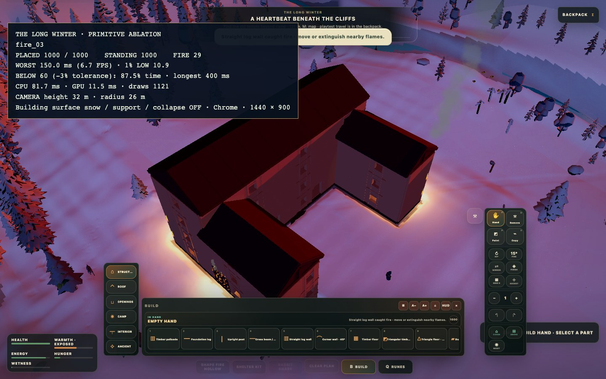
Hitain ruutu 150.0 ms (6.7 hetkellinen FPS) · 1% low 7.5 FPS
Alle 60 FPS (3% toleranssi): 100.0% ajasta · 1 jaksoa · pisin 9999.6 ms. Ruutuaika p95 83.3 ms / p99 116.6 ms. 186 ruutua / 10.00 s.
CPU 52.0 ms, GPU 15.3 ms (diagnostiset keskiarvot, eivät sujuvuuden hyväksyntä). Kamera: korkeus 8 m / etäisyys 35 m.
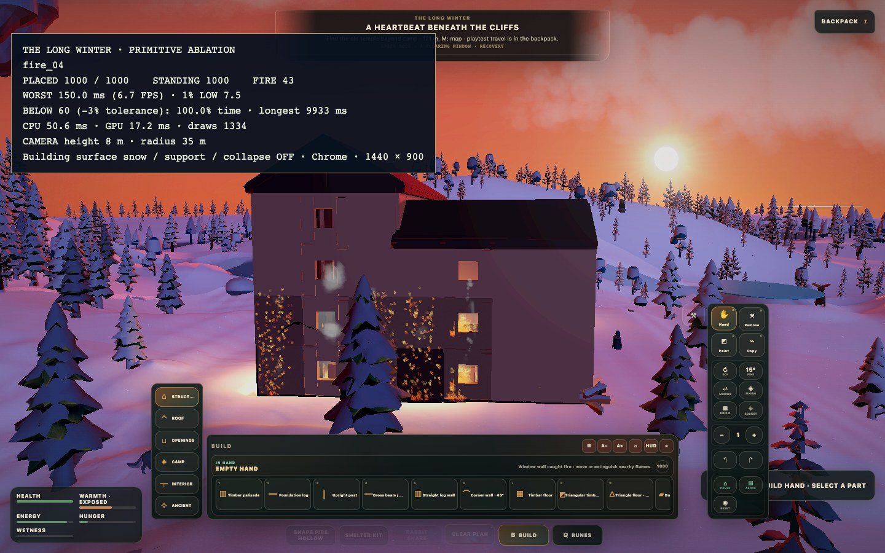
Hitain ruutu 266.6 ms (3.8 hetkellinen FPS) · 1% low 3.9 FPS
Alle 60 FPS (3% toleranssi): 100.0% ajasta · 1 jaksoa · pisin 9932.8 ms. Ruutuaika p95 116.7 ms / p99 250.0 ms. 126 ruutua / 9.93 s.
CPU 74.7 ms, GPU 18.1 ms (diagnostiset keskiarvot, eivät sujuvuuden hyväksyntä). Kamera: korkeus 16 m / etäisyys 44 m.
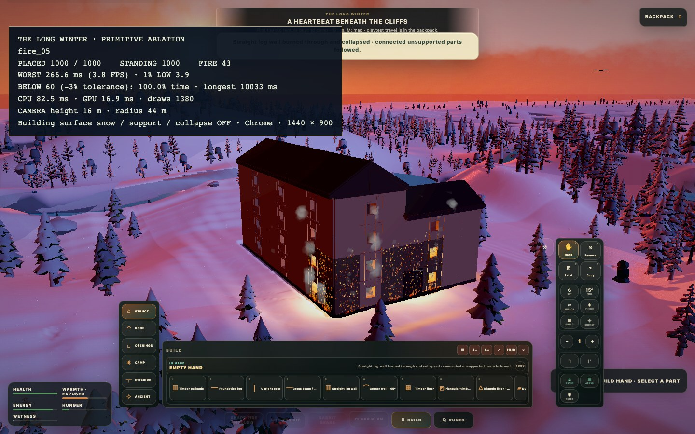
Hitain ruutu 383.4 ms (2.6 hetkellinen FPS) · 1% low 4.0 FPS
Alle 60 FPS (3% toleranssi): 100.0% ajasta · 1 jaksoa · pisin 9916.2 ms. Ruutuaika p95 100.1 ms / p99 116.7 ms. 127 ruutua / 9.92 s.
CPU 73.9 ms, GPU — ms (diagnostiset keskiarvot, eivät sujuvuuden hyväksyntä). Kamera: korkeus 24 m / etäisyys 26 m. Tarkka trace käynnissä; luotettava GPU-erittely erillisessä tracessa.
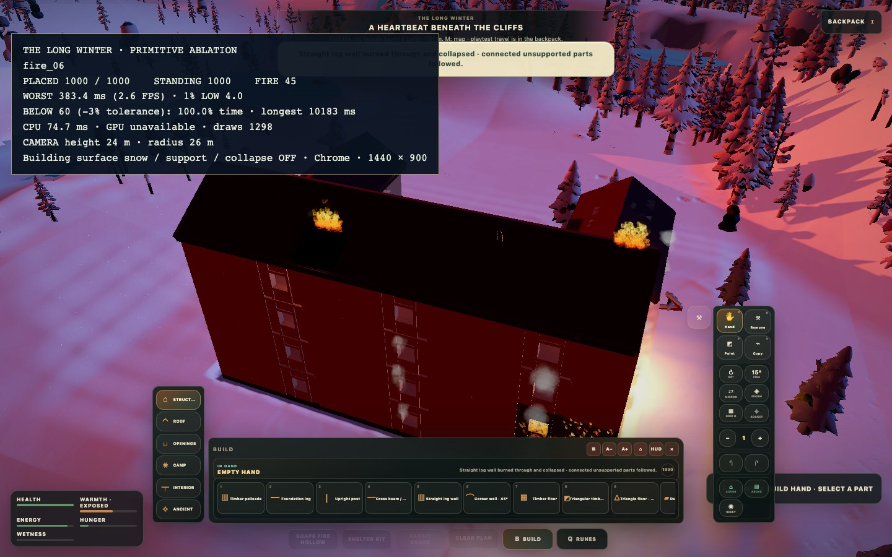
Hitain ruutu 216.7 ms (4.6 hetkellinen FPS) · 1% low 4.8 FPS
Alle 60 FPS (3% toleranssi): 100.0% ajasta · 1 jaksoa · pisin 9999.7 ms. Ruutuaika p95 116.6 ms / p99 199.9 ms. 146 ruutua / 10.00 s.
CPU 66.4 ms, GPU — ms (diagnostiset keskiarvot, eivät sujuvuuden hyväksyntä). Kamera: korkeus 32 m / etäisyys 35 m. Tarkka trace käynnissä; luotettava GPU-erittely erillisessä tracessa.
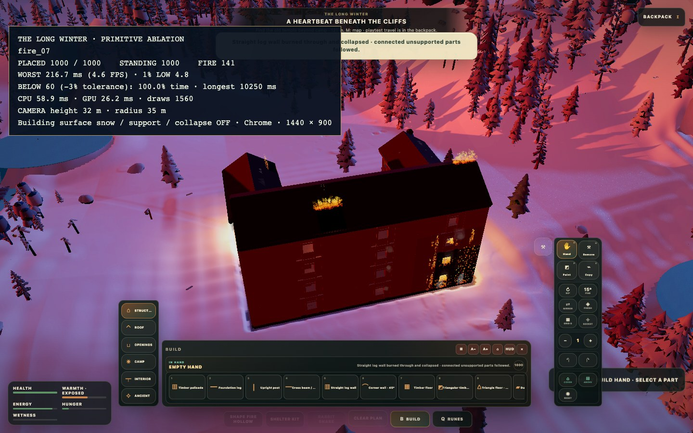
Hitain ruutu 250.0 ms (4.0 hetkellinen FPS) · 1% low 4.4 FPS
Alle 60 FPS (3% toleranssi): 100.0% ajasta · 1 jaksoa · pisin 9999.6 ms. Ruutuaika p95 166.7 ms / p99 200.0 ms. 104 ruutua / 10.00 s.
CPU 94.6 ms, GPU 24.7 ms (diagnostiset keskiarvot, eivät sujuvuuden hyväksyntä). Kamera: korkeus 8 m / etäisyys 44 m.
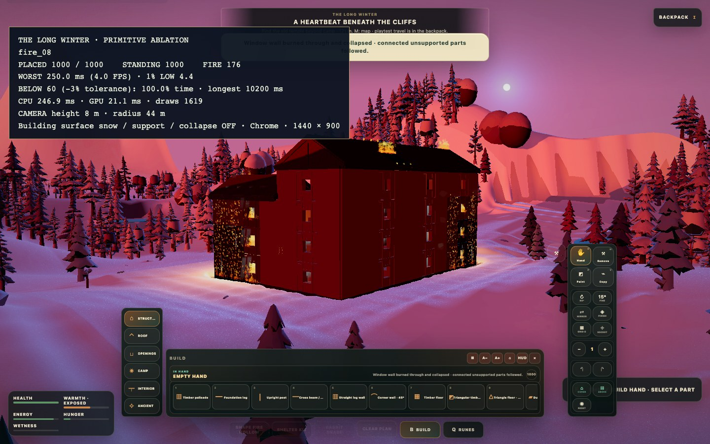
Hitain ruutu 266.7 ms (3.7 hetkellinen FPS) · 1% low 3.7 FPS
Alle 60 FPS (3% toleranssi): 100.0% ajasta · 1 jaksoa · pisin 9882.9 ms. Ruutuaika p95 233.3 ms / p99 266.7 ms. 67 ruutua / 9.88 s.
CPU 143.7 ms, GPU 39.2 ms (diagnostiset keskiarvot, eivät sujuvuuden hyväksyntä). Kamera: korkeus 16 m / etäisyys 26 m.
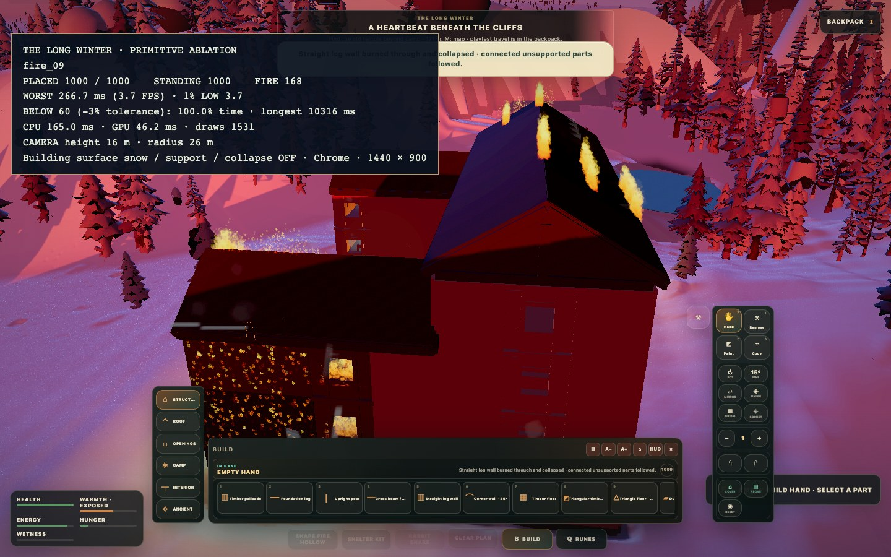
Hitain ruutu 200.0 ms (5.0 hetkellinen FPS) · 1% low 5.0 FPS
Alle 60 FPS (3% toleranssi): 100.0% ajasta · 1 jaksoa · pisin 9833.1 ms. Ruutuaika p95 183.4 ms / p99 200.0 ms. 69 ruutua / 9.83 s.
CPU 140.4 ms, GPU 42.1 ms (diagnostiset keskiarvot, eivät sujuvuuden hyväksyntä). Kamera: korkeus 24 m / etäisyys 35 m.
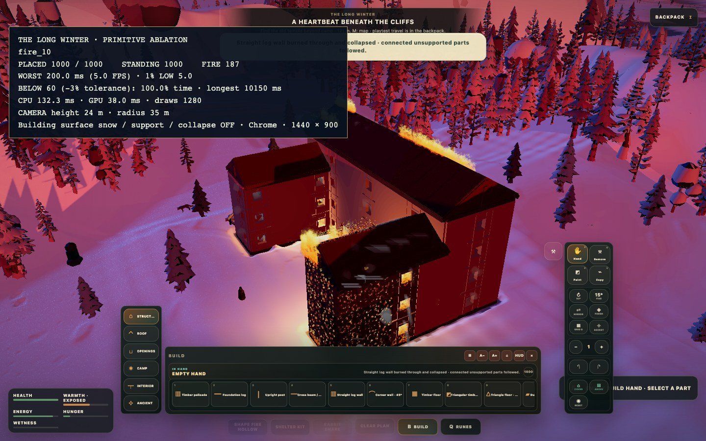
Hitain ruutu 200.0 ms (5.0 hetkellinen FPS) · 1% low 5.0 FPS
Alle 60 FPS (3% toleranssi): 100.0% ajasta · 1 jaksoa · pisin 9983.0 ms. Ruutuaika p95 183.4 ms / p99 200.0 ms. 68 ruutua / 9.98 s.
CPU 145.0 ms, GPU 38.3 ms (diagnostiset keskiarvot, eivät sujuvuuden hyväksyntä). Kamera: korkeus 32 m / etäisyys 44 m.
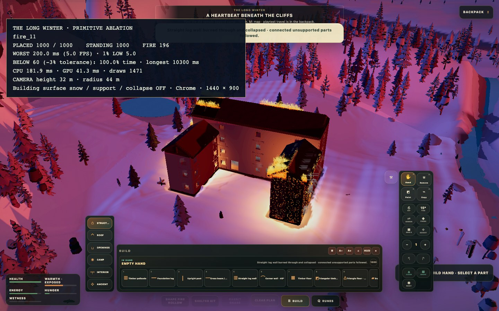